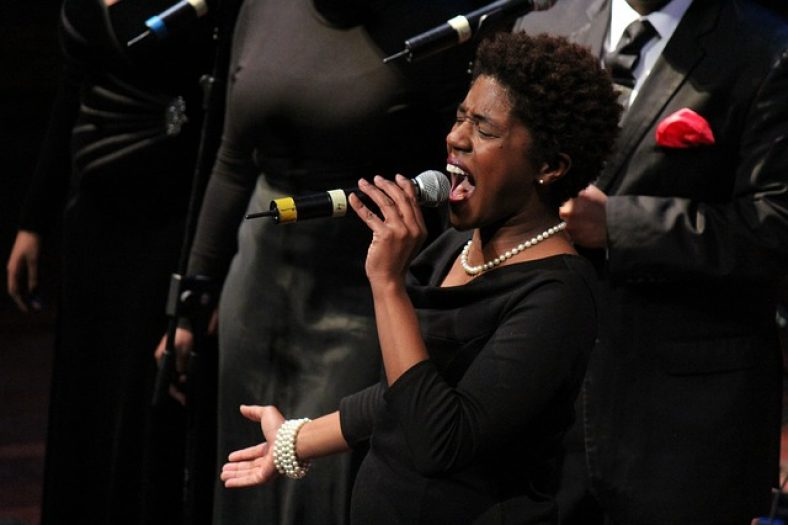

Gospel music is a traditional genre of Christian music, and a cornerstone of Christian media. The creation, performance, significance, and even the definition of gospel music varies according to culture and social context. Gospel music is composed and performed for many purposes, including aesthetic pleasure, religious or ceremonial purposes, and as an entertainment product for the marketplace. Gospel music is characterized by dominant vocals and strong use of harmony with Christian lyrics. Gospel music can be traced to the early 17th century.
The styles emerged out of the African-American music and American folk music traditions and have evolved in various ways over the years, continuing to form the basis of Black church worship even today. It has also come to be used in churches of various other cultural traditions (especially within Pentecostalism) and, via the gospel choir phenomenon spearheaded by Thomas Dorsey, has become a form of musical devotion worldwide. Southern used all-male, tenor-lead-baritone-bass quartets. Progressive Southern gospel has grown out of Southern gospel over the past couple of decades. Christian country music, sometimes referred to as country gospel music, is a subgenre of gospel music with a country flair. It peaked in popularity in the mid-1990s


Gospel music is one of the few music genres that are tied up to a particular religion, which is Christianity in this case. One prominent feature that makes gospel music what it is the overpowering Christian vocals. It also incorporates complex rhythms, harmony, and distinctive call and response patterns.Gospel music is played for religious, spiritual, and aesthetic reasons. Some of the most popular gospel songs are Sam Cooke’s Peace in the Valley, Marian Anderson’s Move On Up A Little Higher, and Aretha Franklin’s There Is A Fountain Filled With Blood.